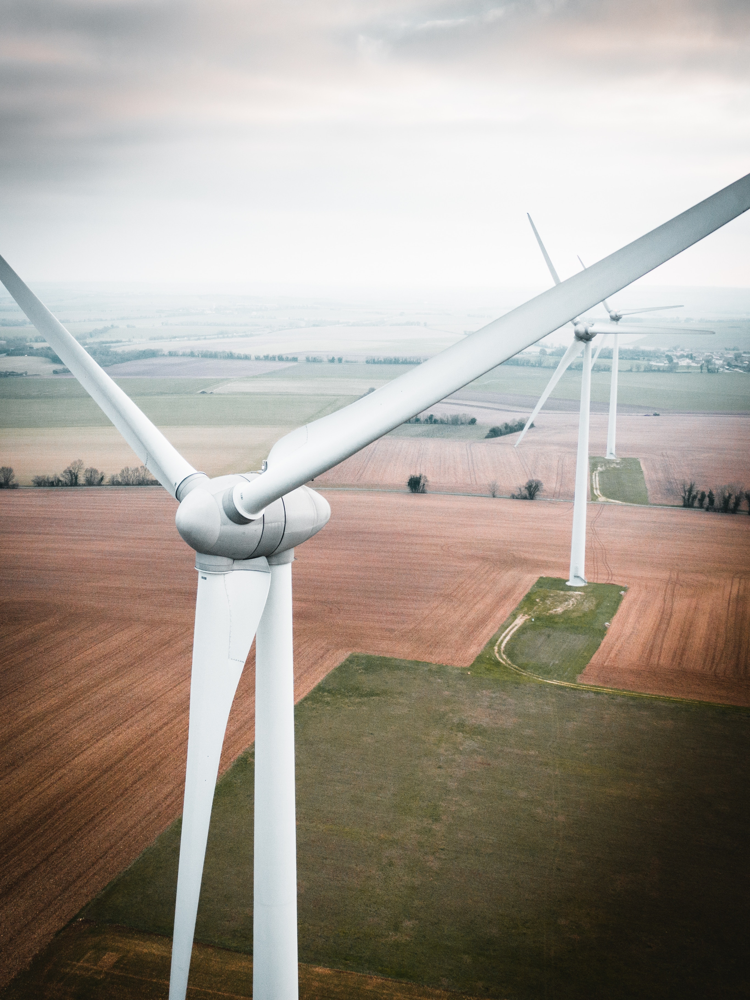

Wind Power is the process of creating energy using the power of wind and air flow that the earth creates naturally. This wind power is turned into electrical power using modern wind turbines. The wind turbines harness the kinetic energy from the wind and turn it into electrical power. Wind energy is a major job producer for The state of Iowa.
Frances Beinecke:
Wind and other clean, renewable energy will help end our reliance on fossil fuels and
combat the severe threat that climate change poses to humans and wildlife alike.
